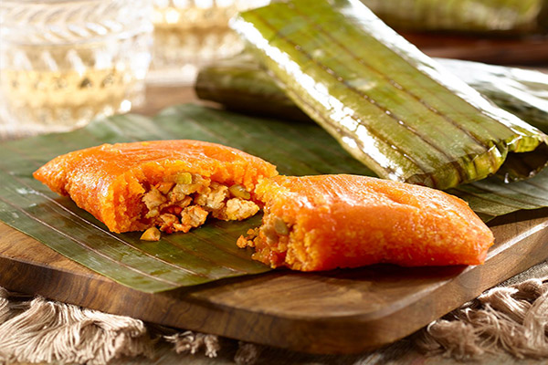
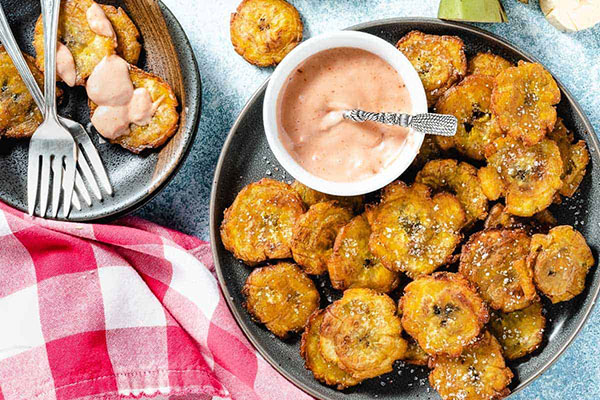
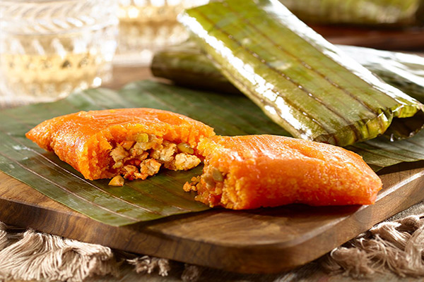
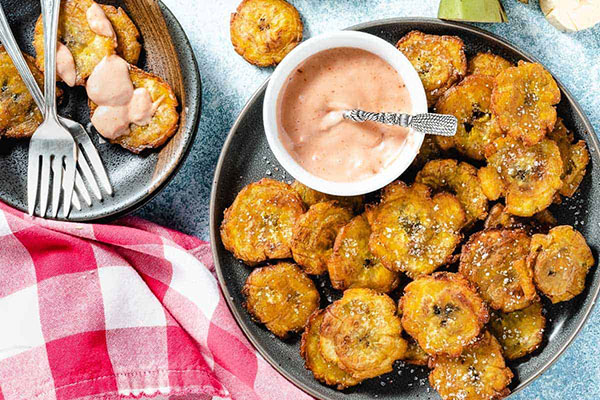

Puerto Rican cuisine is a tantalizing fusion of flavors that reflects the island's vibrant culture and diverse heritage. Arroz con gandules, a quintessential dish, combines fluffy rice with pigeon peas, infused with a medley of savory spices like sofrito, sazón, and adobo, creating a harmonious blend of textures and aromas that symbolize home-cooked comfort. Tostones, crispy plantain slices, are a beloved side dish or snack, fried until golden and lightly salted, offering a delightful crunch and subtle sweetness that perfectly complements any meal. Meanwhile, pasteles are a labor of love, each one meticulously crafted with a dough of grated green bananas, plantains, and yautia, filled with a savory mixture of seasoned meat, wrapped in banana leaves, and boiled to perfection, resulting in a symphony of flavors and textures that evoke memories of festive gatherings and cherished traditions. These culinary delights embody the essence of Puerto Rican cuisine, where every bite tells a story of heritage, community, and culinary passion.